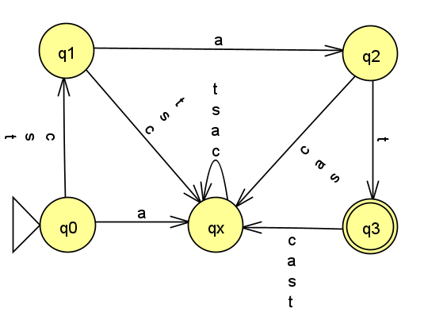

Homework 3
Last updated: Tue, 29 Sep 2026 10:53:43 -0400
Out: Tue, Sep 29, 12:30pm EDT Due: Tue, Oct 06, 12:30pm EDT
Note: Assignments are not officially "released" until—
and are subject to change without notice up to— the indicated "Out" date and time. If an assignment is posted early, students may look ahead but are responsible for ensuring that they are always working with the most recent version of the homework.
This assignment explores the concept of closed operations on regular languages.
Homework Problems
A Function on Languages (12 points)
Are Regular Languages Closed Under \mathrm{BOS}? (15 points)
DFAs vs NFAs (12 points)
README (1 point)
Total: 40 points
Submitting
Submit your solution to this assignment in Gradescope hw3. Please assign each page to the correct problem and make sure your solutions are legible.
A submission must also include a README containing the required information.
1 A Function on Languages
Those of you who are not originally from this area may have noticed that some people from Boston may pronounce some words differently. For example, they might say "pahk the cah" instead of "park the car".
Consider a function, \mathrm{BOS}:\textsf{Language}\rightarrow\textsf{Language}, which could be understood as one that approximately converts a set of strings into their "Boston" versions. More specifically, for each string in the input language, the function drops the last character and then adds "h" to the end.
Formally:
\mathrm{BOS}(L)=\{w\texttt{h}\mid \textsf{ where }wx\in L,x\in\Sigma\}
Assume that \Sigma is the alphabet for language L, and that the alphabet for \mathrm{BOS}(L) is \Sigma \cup \{\texttt{h}\}. To simplify the problem, you may assume that the alphabet for the input the \mathrm{BOS} never contains h.
Consider the following language: AR = \{\texttt{bar},\texttt{car},\texttt{jar}\}
Prove this statement: AR IS-A Regular Language.
What is the language \mathrm{BOS}(AR)? (since a language in this course is a set of strings, only a set of strings will be an acceptable answer. do not add anything else)
Prove this statement: \mathrm{BOS}(AR) IS-A Regular Language
2 Are Regular Languages Closed Under \mathrm{BOS}?
Prove that the class of regular languages is closed under the \mathrm{BOS} set operation.
Hint:
Using the proof terminology of this semester’s course, give the equivalent IF-THEN statement that must be proved (see lectures for examples of this kind of problem. usually it will say "in other words ...").
Note: submissions that prove the wrong statement will not receive credit.
You may ask on piazza if your statement is correct. (But note that if you start the assignment too late and the course staff is no longer available, then you’ll have to proceed without getting this approval.)
Give a proof of this IF-THEN statement.
The proof must be properly formatted using the appropriate proof constructors and/or "Statements and Justifications" tables when appropriate
Since we dont know the input language L, then any Examples Tables will need an additional "Justification" column, as explained in lecture.
Your answer should include the definition of a function BOS_\textsf{DFA} : \textsf{DFA}\rightarrow\textsf{DFA} that convert some DFA to a different DFA.
Example Tables should have at least 2 examples, which must include at least one that is in the output language and one that is not in the output language.
3 DFAs vs NFAs
Consider the diagram from Homework 1 DFA Formal Description:

For this problem, assume the diagram depicts an NFA.
In class we learned that an NFA constructor requires five components, e.g. N = \texttt{mk-NFA}(Q,\Sigma,\delta,q_{start},F), where \delta:Q\times\Sigma_\varepsilon\rightarrow\mathcal{P}(Q) is the transition function mapping a state and input symbol (or no symbol, in the case of an empty transition) to a set of states.
Come up with a formal NFA constructor description of the diagram above (yes, it’s the same diagram as HW1, but now you are being told it an NFA).
Compare your answers from this problem and Homework 1 and give two differences between the formal description of a DFA and the formal description of an NFA.